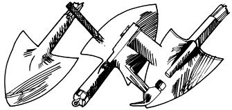

ASK YOUR EXPERTS
Fixing shovels and figuring out plants.
I need to replace the handle on my favorite shovel, but I can't figure out how to remove the old broken-off stub so I can get the new handle on. As I visit other people's yards, I'm always seeing broken shovels lying around, so a lot of us must have this problem.
First, file the head off the pin that helps hold the wooden handle in the metal shaft of the shovel. If the pin goes just into the handle, pound the headless pin into the wood; it will come out with the handle. If the pin goes all the way through to exit on the other side, pound in the filed-offend until you can remove the pin from the other side.
Now look at the back of the shaft. If it is not welded together, take a couple of screwdrivers and pry it open, then pop the handle out. If it is bonded shut, things get a tad more interesting.
If the handle broke off flush with the shaft, or too short to provide a hand hold, you'll have to build yourself a grip. Find a good-sized eye screw, then drill a hole-just narrower than the screw's outside threads-into the handle and twist the screw in. (You can't just screw the fastener into the wood; doing so would force the wood to expand and wedge the handle in even tighter.) On the other hand, if the handle broke off high enough so you can grip it, you can skip this step.
Now heat the shaft with a torch until it is hot (but not glowing, or the metal will lose its temper). Make sure there is good ventilation, because there will be plenty of smoke. (If you don't own a torch, you might try heating the shaft over a barbecue grill.) Under heat, the metal will expand slightly and the wood will shrink-giving you just enough play to yank the handle out.
On some shovels, the shaft is open at the blade end. If yours is, you can place a piece of metal rod in the hole and pound on it, helping to force the broken handle out of the shaft.
Have your new handle ready, and insert it in the shaft while the metal is still hot (but not hot enough to char the wood), and when everything cools, the fit will be good and tight. You can then drill through the wood, using the pin holes in the sleeve, and insert a bolt, if needed.
-Dennis Burkholder
Dennis Burkholder is a member of MOTHER's research staff.
Birds, Bees and Horticulturists
I keep running across the terms open-pollinated, hybrid and heirloom in seed catalogues, but I don't really know what they mean. Can you explain?
If a particular variety is open-pollinated, then the seed was produced from plants that were pollinated by the wind, insects or other natural means. Each plant produced seed when its flower received pollen from itself or from another plant of the same variety in the garden. Open-pollinated varieties "come true to seed"-that is, the offspring resembles its parents. So you can save the seed from your best plants from year to year. However, just as German shepherd puppies in the same litter differ from each other just a bit, individual plants from the same batch of seed will vary slightly. One may ripen fruit faster, one may produce fruit that is just a little longer than average, and still another may show a greater resistance to disease. Thus, over time you can select strains that, among other things, are flavorful, slow to bolt, disease-resistant or well adapted to your climate.
Hybrid plants lack such genetic diversity. Creations of human intervention, they are identical to each other. To produce hybrids, plant breeders select good open-pollinated varieties and hand-pollinate each flower with pollen from the same plant. Once a strain is "selfed" in this manner for several generations and a pure inbred strain is obtained, the breeders cross various strains until they obtain a new variety superior to either of the parents. Then they name the new variety and continue to cross the parents and sell the resulting seed. Because the parents are identical, the offspring are also alike.
Hybrids are usually bred for industrial agriculture-that is, to respond well to chemical fertilizers and pesticides, and to produce fruit that will withstand shipping and storage. Most important, hybrids do not produce true to seed. Seeds from hybrid plants are either sterile or produce inferior plants that do not resemble the carefully created hybrid. This means, of course, that you have to buy seed every year. Hybrids are named as such in seed catalogues, or are marked with an F1 or F2 in parentheses. A seed company that develops a hybrid can keep its parentage secret and thus remain the sole source of seed. There are even laws being passed in some countries to patent certain varieties, making it illegal to save and grow certain seeds.
Heirloom varieties, also known as old-fashioned or memory varieties, are openpollinated strains that have been handed down by individual growers over generations as a living legacy. These older varieties often far surpass newer strains in taste, because they have been hand-selected by individual gardeners over time for good flavor, not for shippability or ease of machine harvest.
For further reading, see The Heirloom Gardener, by Carolyn Jabs (Sierra Club Books, 1984).
-Susan Sides Susan Sides isMOTHER's head gardener.
If you'd like our panel of consultants to answer a question concerning some aspect of self-reliant living that has you stumped, send it to Ask Our Experts, Mother Earth News, P.O. Box 70, Hendersonville, NC 28793.
|
 |
|
|